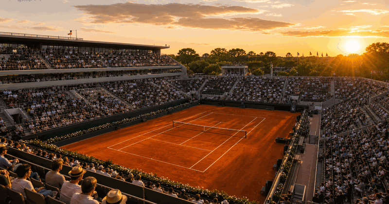

May 24, 2027 - Jun 7, 2027 - expected - 7 Jun 2026 - Paris, France
Expected date. Verify the official event schedule before booking travel, tickets or accommodation.

The clay-court Grand Slam in Paris moves from packed opening rounds to a sharper second week, where every match can redraw the title story.
 More tennis
Tennis topic
More tennis
Tennis topic
Grand Slams, tours and tournament pages in the same event frame.
Main draw: 24 May - 7 June 2026. The tournament is in its second week on 4 June 2026.
Expected date. Verify the official event schedule before booking travel, tickets or accommodation.
Expected date. Verify the official event schedule before booking travel, tickets or accommodation.
The useful view right now is not a long article: it is dates, courts, draws and what each round means. Match order can move with weather, match length and court changes.
Court Philippe-Chatrier and Court Suzanne-Lenglen carry most of the high-demand sessions once the singles draws narrow.
Use official order-of-play updates for exact daily court allocation and start times.
These are the practical parts of the tournament, from broad early access to the final weekend.
Large daily match volume across the grounds. Best for scanning many players, outer courts and first-week upsets.
Quarterfinals and semifinals reduce the tournament to title paths. This is the cleanest view for current storylines.
The singles champions are decided on the closing weekend. Results should replace previews once finals are complete.
Keep this page as the evergreen Roland-Garros entry, with edition details refreshed in the framed panel rather than split into separate event URLs.